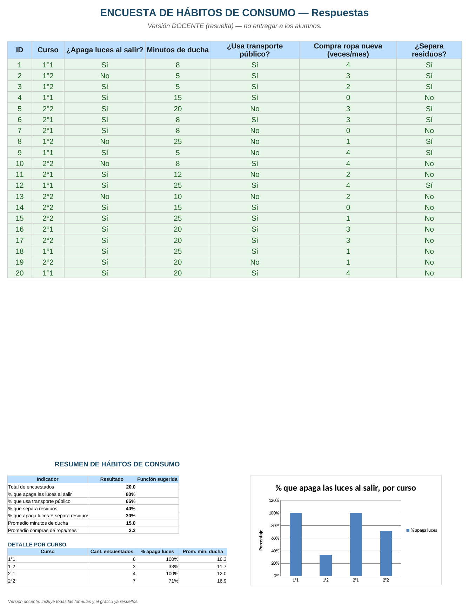

Informática Aplicada a la Gestión · Prof. Humberto Montaldi
Vamos a encuestar a compañeros de la escuela sobre sus hábitos (luces, ducha, transporte, residuos) y a analizar los resultados construyendo ustedes mismos las fórmulas de conteo y promedio.
Archivo a usar: 2_Analisis_Habitos_Consumo_ALUMNOS.xlsx
⬇ Descargar planilla (Alumnos)Cuenta cuántas celdas de un rango tienen algún dato (no importa cuál).
Sintaxis =CONTARA(rango) Ejemplo en este archivo =CONTARA(Respuestas!A5:A24)Cuenta cuántas celdas de un rango cumplen una condición (por ejemplo, cuántos respondieron "Sí"). Dividiendo ese resultado por el total de encuestados, se obtiene el porcentaje.
Sintaxis =CONTAR.SI(rango,"criterio")/CONTARA(rango) Ejemplo en este archivo (% que apaga las luces) =CONTAR.SI(Respuestas!C5:C24,"Sí")/CONTARA(Respuestas!C5:C24)Igual que CONTAR.SI, pero permite pedir que se cumplan varias condiciones al mismo tiempo (por ejemplo: apaga las luces Y separa residuos).
Sintaxis =CONTAR.SI.CONJUNTO(rango1,"criterio1",rango2,"criterio2")/CONTARA(rango) Ejemplo en este archivo =CONTAR.SI.CONJUNTO(Respuestas!C5:C24,"Sí",Respuestas!G5:G24,"Sí")/CONTARA(Respuestas!A5:A24)Para saber cuántos encuestados hay de un curso puntual, usás CONTAR.SI comparando contra la celda del curso. Para el porcentaje que apaga luces DE ESE curso, combinás dos condiciones con CONTAR.SI.CONJUNTO. Para el promedio de ducha DE ESE curso, usás PROMEDIO.SI.CONJUNTO.
Ejemplo (cantidad de encuestados de 1°1) =CONTAR.SI(Respuestas!B5:B24,A14) Ejemplo (% que apaga luces en 1°1) =CONTAR.SI.CONJUNTO(Respuestas!B5:B24,A14,Respuestas!C5:C24,"Sí")/CONTAR.SI(Respuestas!B5:B24,A14) Ejemplo (promedio de ducha en 1°1) =PROMEDIO.SI.CONJUNTO(Respuestas!D5:D24,Respuestas!B5:B24,A14)Así debería quedar la hoja Resumen resuelta (con los datos de ejemplo). Usalo para comparar tu resultado — acá no se ven las fórmulas, solo los valores y el gráfico.

2_Analisis_Habitos_Consumo_MODELO.png